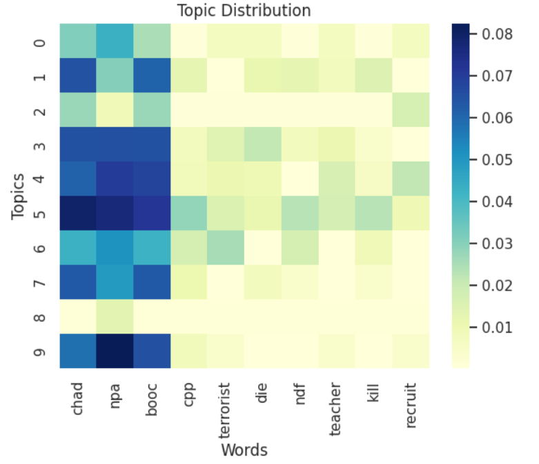

Data Exploration
Now that we have tweets to work with, we first explore the data that we have. When performing data exploration, there are three general steps: preprocessing, visualization, and features analysis.
Preprocessing
Each sample of our dataset represents one tweet. Multiple columns exist to describe a tweet: tweet URL, account handle, account name, account bio, account type, joined, following, followers, location, tweet, tweet type, date posted, content type, likes, replies, retweets, and quote tweets.
For understanding purposes, a sample looks like this:
| tweet URL | https://twitter.com/cebudailynews/status/1503586201114189824 |
| account handle | @cebudailynews |
| account name | CDN Digital |
| account bio | Cebu's only independent digital news portal |
| account type | Media |
| joined | 6/23 |
| following | 669 |
| followers | 372036 |
| location | NRA, Cebu City, Philippines |
| tweet | AFP: Ex-NPA members say Chad Booc was an NPA rebel https://t.co/3yw17RwMSd |
| tweet type | Text, URL |
| date posted | 3/15/2022 4:17 |
| content type | Rational |
| likes | 0 |
| replies | 0 |
| retweets | 0 |
| quote tweets | 0 |
Here are the multiple ways we cleaned our data using preprocessing techniques.
Handling missing values/ensuring no missing values
Columns account bio and location have missing values. These missing values were replaced with empty strings to avoid errors in the next preprocessing steps.
Ensuring formatting consistency (date, labels, etc.)
Columns joined and date posted contain date values. To standardize the dates and make them ready for time series analyses, the string-type date values are converted to Date-type values with pandas’ date conversion function.
Categorical data encoding
Column content type is a multicategorical feature: this means that a value under this column can contain multiple categories, which are separated by commas (e.g., “Text, Reply, Image, URL, Video”). To draw analyses from such values, each string-type value is converted into a list of categories. And then one hot encoding is applied to convert these multicategorical values into numerical data, such that “Text” is converted to (1, 0, 0, 0, 0) and “Text, Reply, URL” is (1, 1, 0, 1, 0).
Natural Language Processing
To perform a topic analysis on the tweets collected, the following preprocessing techniques were performed on the tweet column:
- Converting tweets to string-type values
- Replacing emojis with descriptions
- Lower-casing of words
- Removing URLs
- Removing special symbols @’s and #’s
- Removing alt-text-image descriptions
- Removing quotation marks and punctuations
- Removing newlines
- Removing whitespaces
- Removing stop words
- Translating tweets from Filipino to English
Tokenization and lower casing
In order to analyze the tweet effectively, the tweet's words are converted to lowercase using Python's built-in lower() function. To convert the tweet into a list of individual words, NLTK's word_tokenize() function is applied to each tweet.
Stop words removal
In order to get the important words to help the model only consider key features of the tweet, stop words (e.g., articles like "the", pronouns like "they") are removed from the tweet. The stop words are removed using the stopwordsiso's stopwords function. For the removal of Tagalog and Bisaya stop words, the stop-word dictionaries found in digitalheir's cebuano-dictionary-js and genediazjr's stopwords-iso/stopwords-tl were used.
Stemming and lemmatization
In order to analyze the emergence of topics among the collected tweets better, stemming and lemmatization are performed. Stemming reduces words to their base form by removing suffixes. For example, the word "happiness" can be stemmed to "happi". On the other hand, lemmatization reduces words to their base form by taking into account the morphological context. For instance, the word "happiness" is lemmatized to "happy". NLTK's library PorterStemmer and WordNetLemmatizer are used for this step.
Time Series Analysis
To determine what month and hour were most of the tweets came from, the following technique was done,
Binning
In order to group the tweets by month and hour, pandas' groupby was used on the Date Posted column.
Visualization
To get an idea of the possible insights we can draw from the data that we have, we created visualizations to see the existence of trends in our data.
Tweets
To analyze the topics present amongst the tweets, we made visualizations that show the most frequent words that were used by users.
Figure 1: Histogram showing the top 15 bigrams in the tweet dataset. The x-axis displays the unigrams, while the y-axis represents the frequency of occurrence for each unigram.
Figure 2: Histogram showing the top 10 bigrams in the tweet dataset. The x-axis displays the bigrams, while the y-axis represents the frequency of occurrence for each bigram.
Figure 3: Word cloud visualizing the most frequently used words in the dataset.
To infer the possible topics present among the tweets, the Latent Dirichlet Allocation (LDA) model was used. This model assumes that a dataset contains a mixture of multiple topics and that each topic is a distribution over words.

Figure 4: Histogram showing the distribution of topics in the dataset using LDA topic modeling algorithm.
The color scale represents the probability that a given word belongs to a specific topic.
Each topic is described by a collection of words commonly found when that topic is being discussed.
Note that the words analyzed have been stemmed for better capturing of topics.
These are the top 10 most common topics found:
| Topic 0 | chad, booc, npa, teacher, justic, activist, support, student, soldier, recruit |
| Topic 1 | booc, npa, chad, kill, cpp, ndf, terrorist, i, arm, die |
| Topic 2 | chad, booc, npa, 😂, cpp, ndf, justic, friend, death, student |
| Topic 3 | tweet, pattern, intellectu, observ, kakampinksconfus, moral, languag, behavior, bankruptci, perenni |
| Topic 4 | npa, booc, chad, terrorist, cpp, teacher, ndf, recruit, sympath, communist |
| Topic 5 | chad, booc, npa, dead, cpp, sympath, afp, countri, die, terrorist |
| Topic 6 | npa, booc, chad, recruit, afp, tag, die, red, teacher, hero |
| Topic 7 | chad, booc, npa, terrorist, encount, die, kill, communist, death, fool |
| Topic 8 | npa, chad, booc, bro, peopl, cpp, victim, school, tell, afp |
| Topic 9 | chad, booc, npa, die, davao, oro, encount, cpp, children, peopl |
Time
To analyze the time posted for the tweets, we made visualizations that show the most frequent month and hour that those tweets were posted by the users.
Figure 5: Line graph showing the number of tweets per month. The x-axis displays the month, while the y-axis displays the number of tweets.
Figure 6: Line graph showing the number of tweets per hour. The x-axis displays the hour, while the y-axis displays the number of tweets.
Distribution of Types
To analyze the content type and tweet type, we made visualizations that show the count for each type of content and tweet
Figure 7: Bar plot showing the count of each content type. The x-axis displays the content type, while the y-axis displays the number of tweets.
Figure 8: Bar plot showing the count of each tweet type. The x-axis displays the tweet type, while the y-axis displays the number of tweets.
Number of Likes, Retweets, and Replies
To analyze the correlation between the number of likes, retweets, and replies, Pearson correlation was used.
Figure 9: Pearson correlation between the number of likes, retweets, and replies
Account Types
To analyze the account types, we made we made visualizations that show the count for each type of account.
Figure 10: Bar plot showing the count of each account type. The x-axis displays the account type, while the y-axis displays the number of accounts.
Account Bios
To analyze the account bios, we made we made visualizations that show the most frequently used words.
Figure 11: Word cloud visualizing the most frequently used words in account bios.
Features
Features from the dataset were examined to determine their relation and insights to the topic
Feature selection
The main feature that is selected is the distribution of topics from the tweet . Other features chosen are tweet type, content type, date posted (month and hour), and the number of likes, retweets, and replies.